|
|
Wechseln Sie zur Seite in englischer Sprache |
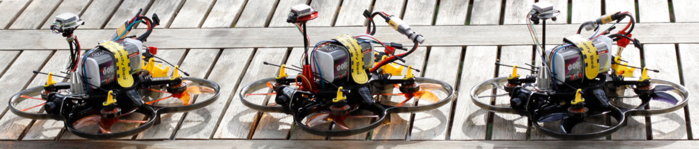
Teilnehmerinnen und Teilnehmer des Projekts arbeiten in Gruppen von maximal vier Personen. Jede Gruppe erhält eine fertig aufgebaute (flugbereite) FPV-Drohne sowie die erforderlichen Komponenten. Ziel des Projekts ist die eigenständige Entwicklung, Implementierung und Bewertung einer praxisnahen Drohnen-KI-Anwendung zur automatisierten Auslieferung von Objekten. Dabei sollen sowohl technische Herausforderungen als auch die Grenzen der eingesetzten Systeme untersucht und nachvollziehbar dokumentiert werden.
| Datum | Räume und Zeiten | Inhalte |
|---|---|---|
| 15.04.2026 | 1-234 (10:00-13:15) | Einführungsveranstaltung, Gruppenfindung, Anforderungsanalyse, Projektplanung |
| 22.04.2026 | 10-MZH (10:00-12:00), 1-022 (12:00-13:15) | Gruppenarbeit |
| 29.04.2026 | 10-MZH (10:00-12:00), 1-022 (12:00-13:15) | Gruppenarbeit |
| 06.05.2026 | 10-MZH (10:00-12:00), 1-022 (12:00-13:15) | Gruppenarbeit |
| 13.05.2026 | 10-MZH (10:00-12:00), 1-022 (12:00-13:15) | Gruppenarbeit |
| 20.05.2026 | 10-MZH (10:00-12:00), 1-022 (12:00-13:15) | Gruppenarbeit |
| 27.05.2026 | 10-MZH (10:00-12:00), 1-022 (12:00-13:15) | Gruppenarbeit |
| 03.06.2026 | 10-MZH (10:00-12:00), 1-022 (12:00-13:15) | Gruppenarbeit |
| 10.06.2026 | 10-MZH (10:00-12:00), 1-022 (12:00-13:15) | Gruppenarbeit |
| 17.06.2026 | 10-MZH (10:00-12:00), 1-022 (12:00-13:15) | Gruppenarbeit |
| 24.06.2026 | 10-MZH (10:00-12:00), 1-022 (12:00-13:15) | Gruppenarbeit |
| 01.07.2026 | 10-MZH (10:00-12:00), 1-022 (12:00-13:15) | Gruppenarbeit |
| 08.07.2026 | 10-MZH (10:00-12:00), 1-022 (12:00-13:15) | Gruppenarbeit |
| 15.07.2026 | 10-MZH (10:00-12:00) | Demonstration und Präsentation der Projektergebnisse aller Teams, Abschlussveranstaltung |
| KI-Drohnen: Ein zweisprachiges Handbuch über Entwurf, Bau und Einsatz von KI-fähigen Drohnen für wissenschaftliche Projekte und Lehre (GitHub-Repository) | ||
| Projektbeschreibung | ||
| Project description |
Jedes Team erhält folgende Ausrüstung:
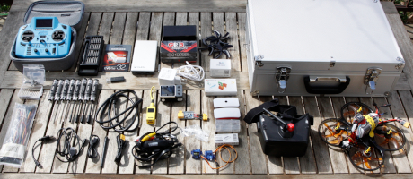
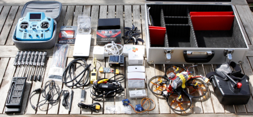
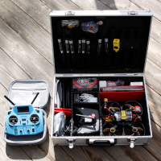
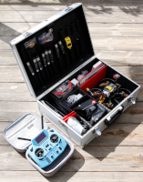
Die Komponenten und deren Verbindung miteinander ist bei allen drei Drohnen weitestgehend identisch.
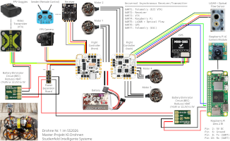
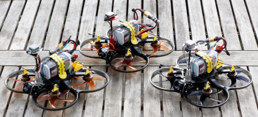
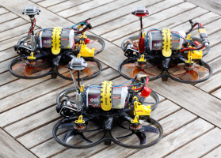
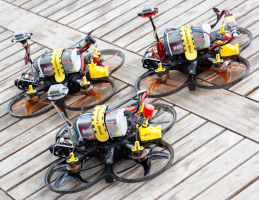
Die vorbereiteten Drohnen sind im Detail...
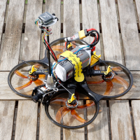
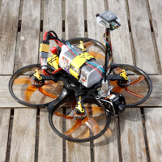
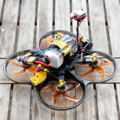
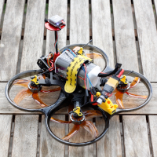
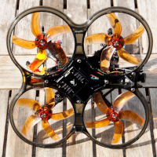
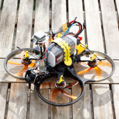
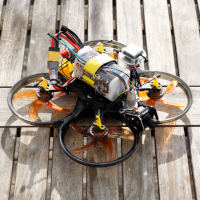
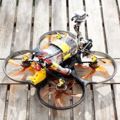
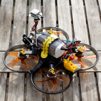
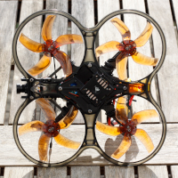
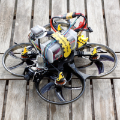
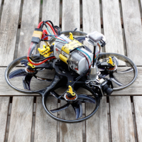
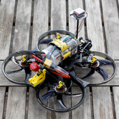
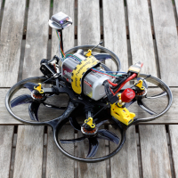
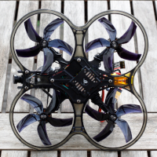
Zu erreichen bin ich am besten per E-Mail: christianbaun@fb2.fra-uas.de
|
Prof. Dr. Christian Baun Frankfurt University of Applied Sciences (1971-2014: Fachhochschule Frankfurt am Main) FB 2: Informatik und Ingenieurwissenschaften Stand: 15.4.2026 |
{kind=link}